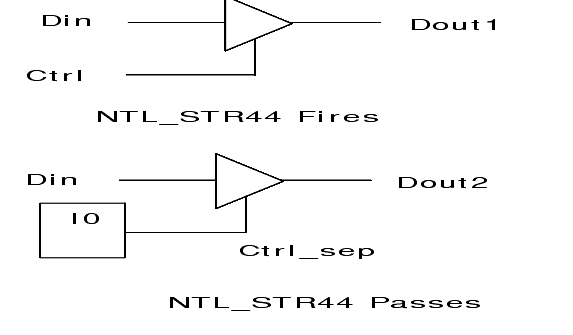

| Description | This rule fires when Leda detects tristate signals used inside a module, instead of being driven from a separate module. A tristate signal should be placed at the module boundary to buffer data. This rule returns statistics on tristate signals that are used inside modules. |
| Policy | DESIGN |
| Ruleset | STRUCTURE |
| Language | VHDL/Verilog |
| Type | Hardware |
| Severity | Error |
This is an example of invalid Verilog code, followed by a circuit diagram that illustrates the problem:
module ntl_str44_top (Clock,Reset,Ctrl, Din, Dout1, Dout2); input Clock, Reset, Ctrl, Din; output Dout1, Dout2; wire Ctrl_sep; assign Dout1 = Ctrl ? Din : 1'bz; // NTL_STR44 fires -- tristate control signal comes inside same module Separate_block I0(Clock, Reset, Ctrl, Ctrl_sep); //a separate module assign Dout2 = Ctrl_sep ? ~Din : 1'bz; // NTL_STR44 pass -- tristate control signal comes from a separate module endmodule